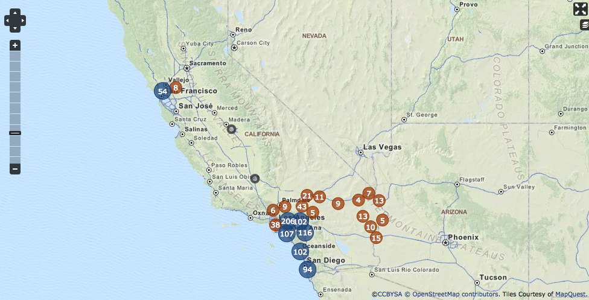

Kick-Ass Maps
With OpenLayers and Drupal
Brooke Heaton
Where we started
- Clients were asking for ways to map their content
- Multiple maps from legacy sites needed to be integrated into a single multi-site
- Maps needed to be authorable so that non-devs could manage the maps
- Solution needed to be flexible, theme-able and accomodate different looks
We needed to go from...
<circle data-index="0" cx="86.57980008275545" cy="259.6543069745427" fill="grey" stroke="#505050" fill-opacity="1" stroke-width="1" stroke-opacity="1" r="4" class="jvectormap-marker jvectormap-element" data-hasqtip="0"></circle>
How we did it
- OpenLayers Module
- Entity with Geofield (Geofield plus Geocode Module)
- Openlayers Map configuration
- OpenLayers Map with Projection and Base Layer
- Vector Overlay Layer(s)
- Map Styles
- Map Behaviors
- Panel Page or Insert View to display map
Step 1: Create an OpenLayers Map View
Your content type has a location data field already, right?
Step 2: Select a Map
Maps can be configured at /admin/structure/openlayers/maps
Tip: Clone default and tweak it
Step 3: Create a Vector Overlay Display
This Display can be in a seperate View, if desired

Step 4: Configure Overlay Fields
Step 4: Configure Map
- Center & Bounds
- Projection
- Base Layer(s)
- Overlay Layers
- Styles
Base Layer(s)
This can be a projection or KML file
Overlay Layers
These are View Displays - you may add multiple layers and switch between them
Styles
Background images, png images, font faces, lines etc.
Getting Schooled
Save yourself a P.I.T.A.
- Install OpenLayers via Drush for the correct configuration
- Start with a small data set and limit returned items
- Be careful with rewriting fields in the Feature - don't reuse Title
- Use a custom field for Description to add more information
- Create a content type or entity define areas (e.g. U.S. States
- Not all projections play well
- Export/save your view often!
Example 1
Clustered Features with Custom Description in Pop-Up (uses Open Layers Plus)
Example 2
Large number of points with clustering

Example 3
KML Base Layer with Layer Switcher and Context Layer